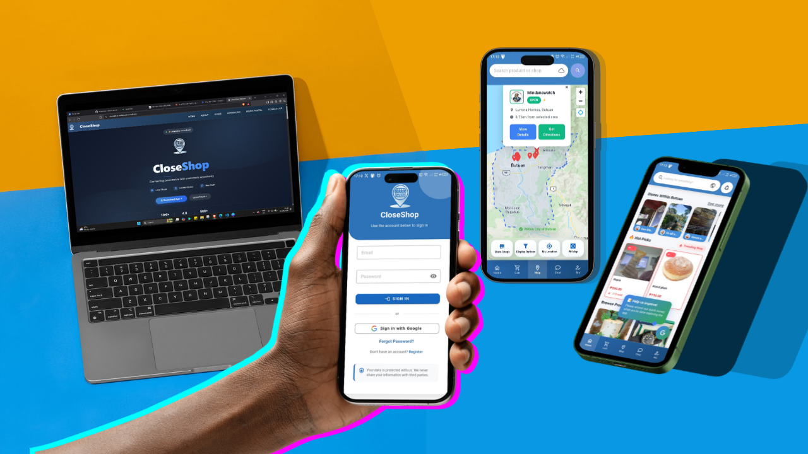

CloseShop — Location-Based E-Commerce for MSMEs
A location-based mobile platform designed to connect Micro, Small, and Medium Enterprises (MSMEs) in Butuan City with nearby consumers — reducing delivery delays, increasing local visibility, and fostering community-based commerce.
Client
MSMEs of Butuan City
Role
Capstone Project Team
Timeline
Sep 2025 – Feb 2026
Deliverables
Android APK, Figma

82.85
SUS Score (Excellent)
4.41
Performance Expectancy
4.36
Effort Expectancy
110
Survey Respondents
Background of the Study
Micro, Small, and Medium Enterprises (MSMEs) serve as the backbone of the Philippine economy, contributing significantly to employment, local production, and overall economic activity. In Butuan City, MSMEs play a vital role in sustaining local communities and fostering regional development across retail, food services, trade, and small-scale manufacturing.
Despite their economic importance, many MSMEs face significant challenges in transitioning to digital commerce. Limited financial resources, technological constraints, low digital literacy, and insufficient scalable infrastructure create barriers to adoption. While large enterprises have successfully implemented digital solutions, many MSMEs struggle to compete in visibility, logistics, and consumer outreach.
"We're losing users in the first 20 minutes. They sign up, see the dashboard, and just bounce. The product does exactly what they need — they just can't find it."
Statement of the Problem
In Butuan City, MSMEs have played an important role in the growth of the local economy and the expansion of employment opportunities. Despite the availability of existing e-commerce platforms like Shopee, Lazada, and Facebook Marketplace, local MSMEs still struggle to engage effectively in e-commerce. These platforms are primarily geared toward servicing national markets rather than localized community markets, causing inefficiencies in deliveries and direct community interactions.
This study addresses the following key challenges:
- Limited online visibility: Local MSMEs face challenges in accessing nearby customers due to market saturation with competing sellers.
- No dedicated platform: Consumers lack a platform for efficient discovery, browsing, and buying from local stores in Butuan City.
- Complex interfaces: Existing platforms may be difficult for some MSMEs to use due to complex technological procedures.
- Trust and location-based needs: Consumers require a more trustworthy, location-based purchasing experience with transparency and accessible product information.
Objectives of the Study
- To develop a functional e-commerce mobile platform that allows MSMEs to register stores and manage product listings effectively.
- To integrate location-based features through a map interface that enables users to locate and access local stores, improving convenience and accessibility.
- To assess the usability of the system using the System Usability Scale (SUS).
- To evaluate user acceptance through the Unified Theory of Acceptance and Use of Technology (UTAUT).
UTAUT Framework
Performance Expectancy (4.41), Effort Expectancy (4.36), Social Influence (4.28), Facilitating Conditions (4.25) — all rated "Good" by respondents.
SUS Evaluation
Mean SUS score of 82.85 — "Excellent" usability classification. Positive scores across ease of use (4.27), learnability (4.25), and confidence (4.35).
System Development
Agile Methodology
CloseShop was developed using the Agile Software Development Life Cycle (SDLC) methodology, consisting of six phases: Plan, Design, Develop, Test, Deploy, and Review. This iterative approach allowed for continuous feedback, stakeholder collaboration, and rapid adaptation to changing requirements.
Technology Stack
- Frontend: Vue.js 3 with Vuetify — component-based architecture with Material Design components
- Backend: Supabase (BaaS) — PostgreSQL database, authentication, and file storage
- Mapping: Mapbox — geolocation, store discovery, route navigation
- Mobile: Capacitor + Android Studio — APK generation for Android deployment
- Notifications: Firebase Cloud Messaging — real-time order updates

System architecture diagram showing client-server design with Vue.js frontend, Supabase backend, and Mapbox integration.
Key Features
Store Registration & Product Management
Business owners can easily register their stores, create detailed product listings with descriptions, images, pricing, and availability variations. The platform provides a streamlined interface for managing inventory and customer interactions.
Location-Based Discovery
Users can discover stores in their vicinity through an interactive Mapbox interface with distance information and navigation support. The map display shows nearby shops by proximity, making it easy to find and access local businesses.
Shopping Cart & Order Management
Consumers can add items to their cart, modify quantities, and complete transactions. Sellers receive real-time notifications and can accept or reject orders. Riders can accept delivery requests, view addresses on a map, and update delivery status.
Store Registration
MSME owners can register shops, submit business details, and get admin approval before going live.
Map-Based Navigation
Interactive maps show nearby stores, route directions, and distance information for easy navigation.
Cart & Checkout
Seamless shopping experience with cart management, order tracking, and real-time delivery updates.
Results & Evaluation
System Usability Scale (SUS)
A total of 110 respondents participated in the SUS evaluation. The platform achieved a mean SUS score of 82.85, which falls within the "Excellent" usability classification. Key findings include:
- Ease of Use (Item 3): 4.27/5 — Users found the system intuitive and easy to navigate
- Learnability (Item 7): 4.25/5 — Most users would learn the system quickly
- User Confidence (Item 9): 4.35/5 — Users felt confident using the platform
- Integration (Item 5): 4.15/5 — Functions were well integrated
The SUS score distribution shows 41 respondents rated the system as "Excellent," 35 as "Good," 27 as "OK," and 4 as "Poor," indicating strong overall usability with room for improvement for a minority of users.
UTAUT Evaluation
Using the Unified Theory of Acceptance and Use of Technology framework with 104 respondents, all constructs received "Good" ratings:
- Performance Expectancy: 4.41 — Users believe CloseShop improves their shopping/selling experience
- Effort Expectancy: 4.36 — The platform is easy to learn and use
- Social Influence: 4.28 — Positive recommendations and community support drive adoption
- Facilitating Conditions: 4.25 — Adequate resources and technical capability exist for use
"CloseShop has made a significant improvement in the visibility of local shops and transactions while also having a high level of user acceptance. The platform is perceived as useful, easy to use, having strong social influence, and facilitating conditions."
Demographic Profile
The study engaged 104 respondents with diverse backgrounds:
- Age: 52.9% (18-25), 22.1% (26-35), 20.2% (36-45), 4.8% (46+)
- Gender: 55.8% Female, 44.2% Male
- Role: 44.2% Customers/Users, 31.7% MSME Owners, 24.0% Employees
- Usage Frequency: 43.3% Weekly, 30.8% Occasionally, 23.1% Daily
Recommendations
- For developers: Include interactive tutorials, step-by-step walkthroughs, and on-screen guidance to help novice users
- For platform improvement: Simplify the interface and streamline features that may confuse non-technical users
- For users: Provide feedback on system operation and ease of use to help refine the platform
- For admins: Review user feedback and usability statistics regularly; make incremental updates as needed
- For future studies: Conduct usability tests with larger and more diversified samples for long-term insights
This capstone project was submitted to the Department of Information Systems, College of Computing and Information Sciences, Caraga State University — Main Campus, in partial fulfillment of the requirements for the degree Bachelor of Science in Information System (BSIS).